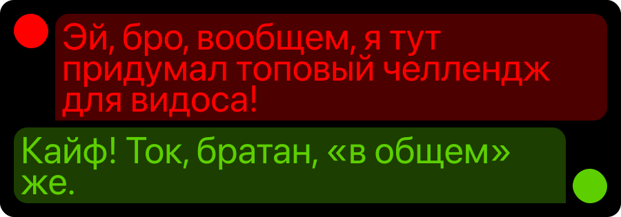
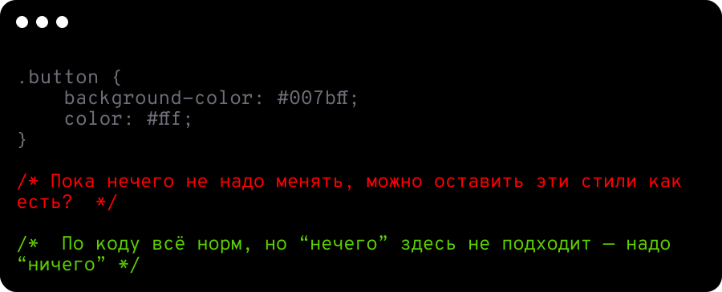
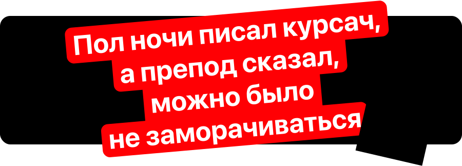
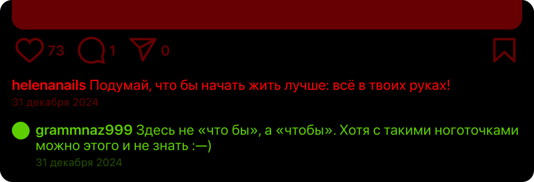
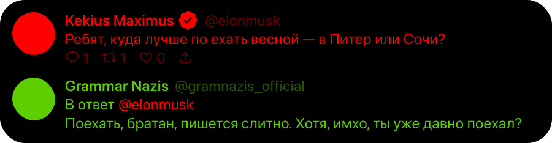

Ошибки, которые мы не замечаем в чатах и соцсетях — а зря
Анна Ревенкова, учитель русского языка
Когда вижу в чатах: «ща», «лол», «угар», — понимаю, что язык живёт и меняется.
Сокращения и сленг упрощают переписку и помогают быстро шутить. Но пара ошибок:
«вообщем», «неумею» — и сразу видно, кто на какие оценки учился.
В этой статье я собрала ошибки, которые вы встречали в рабочих и неформальных чатах.
Вместе разберёмся, как писать чётко, чтобы не портить отношения с коллегами и друзьями.
В конце каждой темы тест, чтоб наверняка.

«Вообщем»
Старый любимчик учителей русского языка. В интернете все уже давно посмеялись
над этими словами, но продолжают писать неправильно: «вообщем» и «вобщем». Нет таких слов,
только «в общем» и «вообще».
НетДа
Вообщем, я понял, что ничего не понял.В общем, я ничего не понял, но это тоже результат.
Вобщем, жизнь — это мем.Вообще, смысл жизни — это сидеть в чате и кидать мемы.
Как лучше написать сообщение?
Вообщем, я пас
В общем, я пас
Вобщем, я пас
«Прокачатся»
Написание ТСЯ и ТЬСЯ в глаголах — из вечных ловушек русского языка.
Учитывая нашу манеру писать быстро, да ещё со сленгом, появляются «смеятся» или даже «смеяца».
Помните правило: если глагол отвечает на вопрос «что делать?», пишите ТЬСЯ: целоваться.
Если глагол отвечает на вопрос «что делает?», пишите ТСЯ: целуется.
НетДа
Нам нужно договорится, кто будет отвечать за баги, а кто — за мемы.Нам нужно договориться, кто будет отвечать за баги, а кто — раздавать смешнявки в чат.
Я пытался подключится, а оказалось, что интернет не подключается.Я пытался зарегистрироваться, а оказалось, что система не хочет регистрироваться.
Как правильно завершить фразу: «Если кто-то говорит “спс” вместо “спасибо”, мне хочется …»
возмутиться
возмутица
возмутиься

«Нечегó»
В переписке часто путают «нечего» и «ничего»: пишут «я нечего не знаю» или ещё хуже «не чего». Получается путаница. Но правило простое: под ударением пишите букву Е: нéчего, а без ударения — И: ничегó. И всегда слитно — раздельно тут делать нечего.
НетДа
Нечего не понял, но очень интересно.Ни-че-го не говори!
И даже так бывало: ко мне на День рождения некто не приходил.И вдруг! Некто появился на пороге.
Это Склисс! Он не чей.Ничей комментарий уже не мог остановить его.
Кто-то объяснил ему этот мем?
Никто не объяснил мне этот мем
Некто не объяснил мне этот мем
Не кто не объяснил мне этот мем

«Пол ночи»
Полчетверти болели и пропустили эту тему? Запоминайте мнемоническое правило «пол-Юли».
Юля — это аббревиатура слов, которые пишутся с ПОЛ через дефис:
Ю — слова, которые начинаются с заглавной буквы: пол-Крыма, пол-Азии;
Л — слова, начинающиеся на Л: пол-литра, пол-лайма;
И — слова, начинающиеся на гласную букву: пол-ананаса, пол-августа.
Остальные слова пишите слитно: полночи, полчаса.
НетДа
Пол-дня смотрел сериалы, а потом вспомнил про дедлайн.Полдня искал вдохновение, а потом решил ничего не делать.
Полинтернета смеётся над этим мемом, а я не в теме.Пол-интернета уже носит эти странные кроксы, а я не в теме.
Пол апельсина съел, а вторую забыл.Пол-апельсина почистил, а на вторую половину сил уже не хватило.
Как написать про минуту?
Пол-минуты ждал, а потом сдался
Пол минуты ждал, а потом сдался
Полминуты ждал, а потом сдался

«Что бы»
Слетает фокус у многих: когда слитно, а когда раздельно? Чтобы ваши сообщения
выглядели топово, запомните: пишите слитно, когда слово выражает цель или причину:
Посмотрю этот фильм, чтобы выплакаться. Пишите раздельно для усиления вопроса:
Что бы такого посмотреть? Частица БЫ опускается без потери смысла.
НетДа
Я записал правило, что бы вы не путались.Я заказал продуктов, чтобы приготовить обед.
Чтобы мне ещё написать про зумеров?Что бы вы хотели на ужин?
Я пришёл, что бы остаться.Я уходила, чтобы вернуться.
Зачем мы заводим будильники?
Я завел будильник, что бы не проспать лекцию по мемологии.
Я завел будильник, чтобы не проспать лекцию по мемологии.
Я завел будильник, что б не проспать лекцию по мемологии.

«По ехать»
Такой ошибкой вы открываете портал в ад. Не грешите и приставку ПО
с глаголами всегда пишите слитно, а раздельное написание вроде «по смотреть»
— это смертельная ошибка.
НетДа
Решил по говорить, но на полуслове закрыл чат.Решил поговорить с ней, но она всё равно не ответила.
Надо по думать, как выжить до зарплаты.Надо подумать, но что там думать?
Хочу по работать, но мемы мешают.Сегодня нужно поработать, а завтра просто мемы.